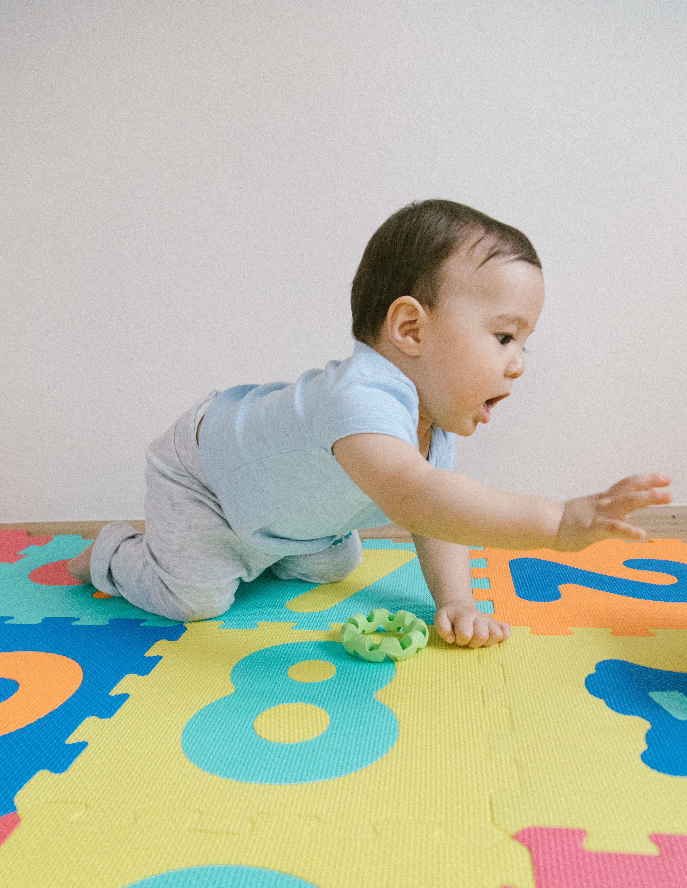

Infants
Our infant program is designed to provide the warmest, most attentive care for your child. We understand that leaving your baby is one of the most significant decisions a family makes — and we take that trust seriously.
Each infant is cared for by a dedicated team member who follows your child's individual schedule for meals, sleeping, and play. Our classroom environment is calm, clean, and thoughtfully designed to stimulate early sensory development.
Program Highlights
- Individualized daily schedules tailored to each baby
- Freedom of movement certified
- Sensory-rich environment to support early development
- Daily communication with families on meals, naps, activities, and milestones

Toddle Time
The toddler years are a time of tremendous growth, as children develop new skills, greater independence, and an increasing curiosity about the world around them. Our toddler program provides a nurturing environment where children are encouraged to explore, discover, and build meaningful connections.
Through sensory play, music, movement, guided activities, and social interaction, toddlers at South Shore Children's Center develop confidence, communication skills, and important foundations for future learning — all within a warm, structured, and supportive setting.
Program Highlights
- Play-based learning designed for toddler development
- Language-rich environment to support early communication
- Sensory, art, and movement activities daily
- Gentle introduction to group routines and social skills

Preschool
Our preschool program gives children the opportunity to build confidence, strengthen important early learning skills, and develop meaningful relationships with their peers. Through a structured and engaging curriculum, children are introduced to early literacy, numeracy, problem-solving, and other skills that help prepare them for the next stage of learning.
Our teachers create warm, supportive classroom environments where each child is encouraged to participate, explore, and grow. We focus on the whole child, balancing academic readiness with social-emotional development, independence, and a genuine love of learning.
Program Highlights
- Structured, play-based curriculum aligned with New York State early learning standards
- Early literacy, phonological awareness, and pre-writing skills
- Early math concepts developed through hands-on exploration
- Social-emotional learning integrated throughout the day
- Daily opportunities for art, music, science, movement, and outdoor play
- Regular communication with families about each child's growth and progress

Pre-Kindergarten & UPK
South Shore Children's Center is the exclusive UPK provider for the West Islip Union Free School District, selected by the district to host its full-day Universal Pre-Kindergarten program funded by the New York State Education Department.
Our Pre-K program is built around kindergarten readiness — developing the academic skills, independence, and social confidence children need to walk into kindergarten ready to succeed. It is one of the most comprehensive pre-kindergarten programs on Long Island. South Shore also welcomes Pre-K students from surrounding communities who are looking to join the program.
Qualifying 4-year-olds who are residents of the West Islip school district may be eligible for the UPK program at no cost, funded by the NYS Education Department. Families must register through the West Islip UFSD.
Learn About UPK EnrollmentCurriculum Framework
Our UPK curriculum is aligned with the New York State Pre-K Learning Standards and integrates two nationally recognized, evidence-based frameworks that together build a strong foundation across literacy, mathematics, science, language, and social-emotional development:
- Heggerty Phonemic Awareness — a structured, sequential program that builds the foundational phonemic awareness skills essential for early reading success
- Fundations® by Wilson Language Training — a systematic phonics and word study program that develops strong decoding, encoding, and spelling skills from the ground up
What Your Child Will Develop
Through hands-on learning experiences, children are encouraged to explore, problem-solve, and think critically. By the end of the program, families can expect their child to demonstrate:
- Phonemic awareness and early literacy — the ability to recognize and work with sounds, letters, and words, building the foundation for reading
- Math and science foundations — early numeracy, problem-solving, and inquiry skills developed through hands-on activities
- Fine motor development — strengthened fine motor skills that support writing, art, and everyday tasks
- Social-emotional growth — self-regulation, empathy, and cooperative skills built through daily routines and guided interactions
- Confidence and engagement — a positive attitude toward learning that carries into kindergarten and beyond
Extended Day Program
For families who need care beyond the UPK-funded school day, SSCC offers a limited number of Extended Day placements. Extended Day begins at 8:30 AM with an option to start as early as 6:30 AM, and the day can end at 4:00 PM or 6:00 PM depending on availability. Contact us to learn more about availability and enrollment.

Before & After School Care
Our before and after school program gives working families the peace of mind that their elementary-age children are safe, supervised, and engaged from the moment the school day starts to when parents are ready to pick them up.
We provide a structured environment with homework help, enrichment activities, and outdoor play — so children arrive home ready to relax, not stressed.
Program Highlights
- Morning drop-off before school starts
- Afternoon pickup directly from SSCC
- Weekly morning yoga sessions with a certified instructor
- Bagels served each Friday morning
- Pizza and movie parties
- Dedicated homework time and academic support
- Enrichment activities, arts and crafts, and games
- Outdoor play when weather permits
- Safe, supervised environment with familiar staff